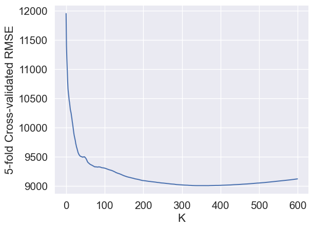

import pandas as pd
import numpy as np
import matplotlib.pyplot as plt
import seaborn as sns
sns.set(font_scale=1.35)
from sklearn.preprocessing import StandardScaler
from sklearn.neighbors import KNeighborsRegressor, KNeighborsClassifier
from sklearn.metrics import mean_squared_error
from sklearn.model_selection import cross_val_score, GridSearchCV, cross_val_predict3 Importing necessary libraries
Read section 4.7.6 of the book before using these notes.
Note that in this course, lecture notes are not sufficient, you must read the book for better understanding. Lecture notes are just implementing the concepts of the book on a dataset, but not explaining the concepts elaborately.
3.1 KNN for regression
#Using the same datasets as used for linear regression in STAT303-2,
#so that we can compare the non-linear models with linear regression
trainf = pd.read_csv('./Datasets/Car_features_train.csv')
trainp = pd.read_csv('./Datasets/Car_prices_train.csv')
testf = pd.read_csv('./Datasets/Car_features_test.csv')
testp = pd.read_csv('./Datasets/Car_prices_test.csv')
train = pd.merge(trainf,trainp)
test = pd.merge(testf,testp)
train.head()| carID | brand | model | year | transmission | mileage | fuelType | tax | mpg | engineSize | price | |
|---|---|---|---|---|---|---|---|---|---|---|---|
| 0 | 18473 | bmw | 6 Series | 2020 | Semi-Auto | 11 | Diesel | 145 | 53.3282 | 3.0 | 37980 |
| 1 | 15064 | bmw | 6 Series | 2019 | Semi-Auto | 10813 | Diesel | 145 | 53.0430 | 3.0 | 33980 |
| 2 | 18268 | bmw | 6 Series | 2020 | Semi-Auto | 6 | Diesel | 145 | 53.4379 | 3.0 | 36850 |
| 3 | 18480 | bmw | 6 Series | 2017 | Semi-Auto | 18895 | Diesel | 145 | 51.5140 | 3.0 | 25998 |
| 4 | 18492 | bmw | 6 Series | 2015 | Automatic | 62953 | Diesel | 160 | 51.4903 | 3.0 | 18990 |
predictors = ['mpg', 'engineSize', 'year', 'mileage']
X_train = train[predictors]
y_train = train['price']
X_test = test[predictors]
y_test = test['price']Let us scale data as we are using KNN.
3.1.1 Scaling data
# Scale
sc = StandardScaler()
sc.fit(X_train)
X_train_scaled = sc.transform(X_train)
X_test_scaled = sc.transform(X_test)Let fit the model and compute the RMSE on test data. If the number of neighbors is not specified, the default value is taken.
3.1.2 Fitting and validating model
knn_model = KNeighborsRegressor()
knn_model.fit(X_train_scaled, (y_train))
y_pred = knn_model.predict(X_test_scaled)
y_pred_train = knn_model.predict(X_train_scaled)
mean_squared_error(y_test, (y_pred), squared=False)6329.691192885354knn_model2 = KNeighborsRegressor(n_neighbors = 5, weights='distance') # Default weights is uniform
knn_model2.fit(X_train_scaled, y_train)
y_pred = knn_model2.predict(X_test_scaled)
mean_squared_error(y_test, y_pred, squared=False)6063.327598353961The model seems to fit better than all the linear models in STAT303-2.
3.1.3 Hyperparameter tuning
We will use cross-validation to find the optimal value of the hyperparameter n_neighbors.
Ks = np.arange(1,601)
cv_scores = []
for K in Ks:
model = KNeighborsRegressor(n_neighbors = K, weights='distance')
score = cross_val_score(model, X_train_scaled, y_train, cv=5, scoring = 'neg_root_mean_squared_error')
cv_scores.append(score)np.array(cv_scores).shape
# Each row is a K(600, 5)cv_scores_array = np.array(cv_scores)
avg_cv_scores = -cv_scores_array.mean(axis=1)sns.lineplot(x = range(600), y = avg_cv_scores);
plt.xlabel('K')
plt.ylabel('5-fold Cross-validated RMSE');
avg_cv_scores.min() # Best CV score
Ks[avg_cv_scores.argmin()] # Best hyperparam value366The optimal hyperparameter value is 366. Does it seem to be too high?
best_model = KNeighborsRegressor(n_neighbors = Ks[avg_cv_scores.argmin()], weights='distance')
best_model.fit(X_train_scaled, y_train)
y_pred = best_model.predict(X_test_scaled)
mean_squared_error(y_test, y_pred, squared=False)7724.452068618346The test error with the optimal hyperparameter value based on cross-validation is much higher than that based on the default value of the hyperparameter. Why is that?
3.1.4 KNN hyperparameters
The model hyperparameters can be obtained using the get_params() method. Note that there are other hyperparameters to tune in addition to number of neighbors. However, the number of neighbours may be the most influential hyperparameter in most cases.
best_model.get_params(){'algorithm': 'auto',
'leaf_size': 30,
'metric': 'minkowski',
'metric_params': None,
'n_jobs': None,
'n_neighbors': 366,
'p': 2,
'weights': 'distance'}The distances and the indices of the nearest K observations to each test observation can be obtained using the kneighbors() method.
best_model.kneighbors(X_test_scaled, return_distance=True)
# Each row is a test obs
# The cols are the indices of the K Nearest Neighbors (in the training data) to the test obs(array([[1.92799060e-02, 1.31899013e-01, 1.89662146e-01, ...,
8.38960707e-01, 8.39293053e-01, 8.39947823e-01],
[7.07215830e-02, 1.99916181e-01, 2.85592939e-01, ...,
1.15445056e+00, 1.15450848e+00, 1.15512897e+00],
[1.32608205e-03, 1.43558347e-02, 1.80622215e-02, ...,
5.16758453e-01, 5.17378567e-01, 5.17852312e-01],
...,
[1.29209535e-02, 1.59187173e-02, 3.67038947e-02, ...,
8.48811744e-01, 8.51235616e-01, 8.55044146e-01],
[1.84971803e-02, 1.67471541e-01, 1.69374312e-01, ...,
7.76743422e-01, 7.76943691e-01, 7.77760930e-01],
[4.63762129e-01, 5.88639393e-01, 7.54718535e-01, ...,
3.16994824e+00, 3.17126663e+00, 3.17294300e+00]]),
array([[1639, 1647, 4119, ..., 3175, 2818, 4638],
[ 367, 1655, 1638, ..., 2010, 3600, 268],
[ 393, 4679, 3176, ..., 4663, 357, 293],
...,
[3116, 3736, 3108, ..., 3841, 2668, 2666],
[4864, 3540, 4852, ..., 3596, 3605, 4271],
[ 435, 729, 4897, ..., 4112, 2401, 2460]], dtype=int64))3.2 KNN for classification
KNN model for classification can developed and tuned in a similar manner using the sklearn function KNeighborsClassifier()
- For classification, KNeighborsClassifier
- Exact same inputs
- One detail: Not common to use even numbers for K in classification because of majority voting
- Ks = np.arange(1,41,2) –> To get the odd numbers